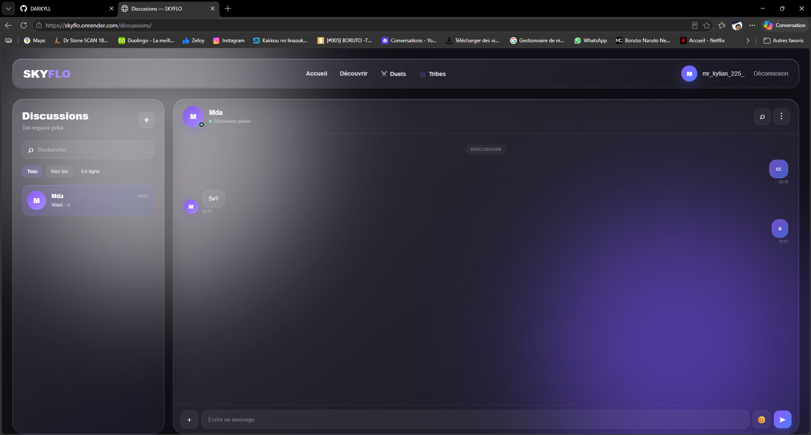
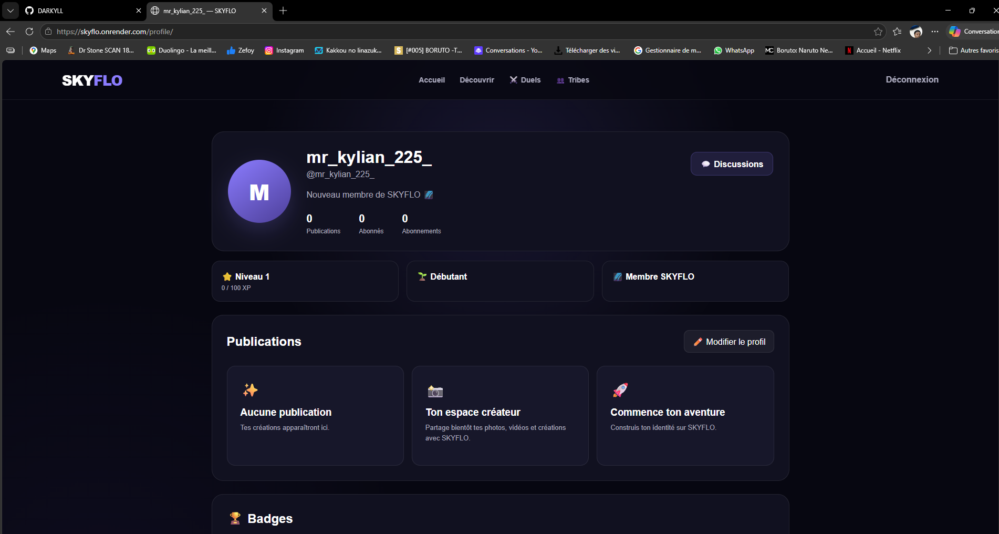
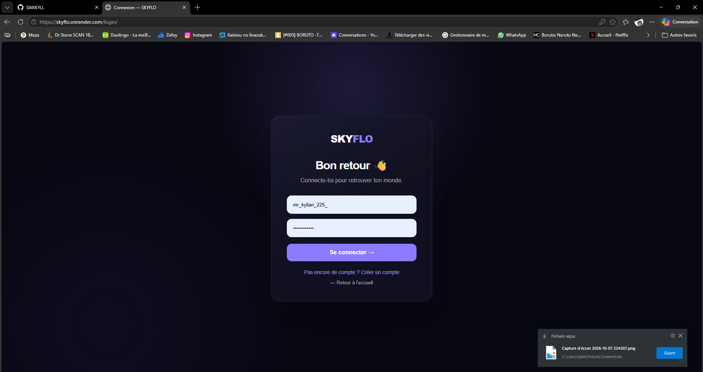
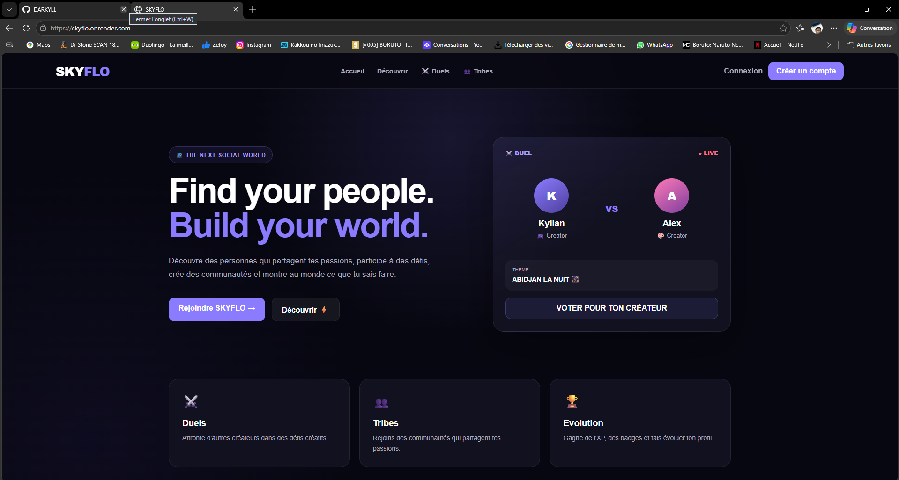

Game Programming · développement informatique & création de jeux vidéo
Je transforme mes idées en applications et prototypes, et je progresse vers le C++ et Unreal Engine pour créer des expériences de jeu.
Une progression orientée vers la programmation, les projets personnels et la création de jeux vidéo.
Développement et bases de la programmation.
C, Pascal, PHP et JavaScript, de la logique à l'application.
Expérimentations pour tester des idées et comprendre le fonctionnement d'une application.
Une application web complète : authentification, profils, discussions et découverte.
Découverte des outils et workflows d'un moteur de jeu.
Une spécialisation en Game Programming pour approfondir gameplay et systèmes de jeu.
Une application sociale web : « Find your people. Build your world. » Un espace pour rencontrer des personnes qui partagent mes passions, participer à des duels et rejoindre des communautés.
Gestion des utilisateurs et accès sécurisé au compte.
Espace personnel avec informations, avatar et progression (XP, niveaux, badges).
Messagerie privée et échanges entre utilisateurs.
Navigation dans le contenu et découverte d'autres créateurs.
Interface, interactions, logique applicative et données, pour transformer une idée en application fonctionnelle.

Discussions privées
Profil utilisateur
Connexion
Page d'accueilJe pratique par la réalisation : une idée, un prototype, un test, une amélioration.
Application / prototype présentant une idée, son interface et son fonctionnement.
Pages et interfaces : structure, navigation, interactions et organisation du code.
Formulaires, traitements et bases de données.
Exercices pour résoudre des problèmes et explorer différentes approches.
Mes bases actuelles et la direction que je veux suivre.
#include <stdio.h> int main() { int note = 15; if (note >= 10) { printf("Admis"); } return 0; }
-- MLDR : PROJET (id_projet, nom, description, #id_utilisateur) SELECT nom, email FROM UTILISATEUR WHERE id_utilisateur = 1;
Faire évoluer mes bases vers le gameplay, les systèmes interactifs et les outils de l'industrie.
Algorithmique, logique et programmation.
Structures, logique et code propre et organisé.
Prototypage et compréhension des outils.
Mécaniques de jeu, interactions et logique des systèmes.
Je souhaite passer d'une formation informatique générale à une spécialisation orientée jeu vidéo, pour progresser vers un profil de Game Programmer.
Approfondir le développement de jeux au-delà de mes bases.
Renforcer mes compétences techniques, vers le C++ et le Game Programming.
Mettre mes connaissances en pratique à travers des prototypes concrets.
Me préparer progressivement à intégrer l'industrie du jeu vidéo.
Je souhaite arriver avec ma curiosité, ma motivation et l'envie de progresser : transformer mes bases en compétences solides et, à terme, contribuer à des projets capables de marquer les joueurs.
Merci d'avoir parcouru mon portfolio. Pour échanger autour de mes projets ou du développement de jeux vidéo :
📧 E-maildarelkilliane542@gmail.com 💻 GitHubgithub.com/DARKYLL 🔗 LinkedInDarel Killiane 🚀 SKYFLOskyflo.onrender.com